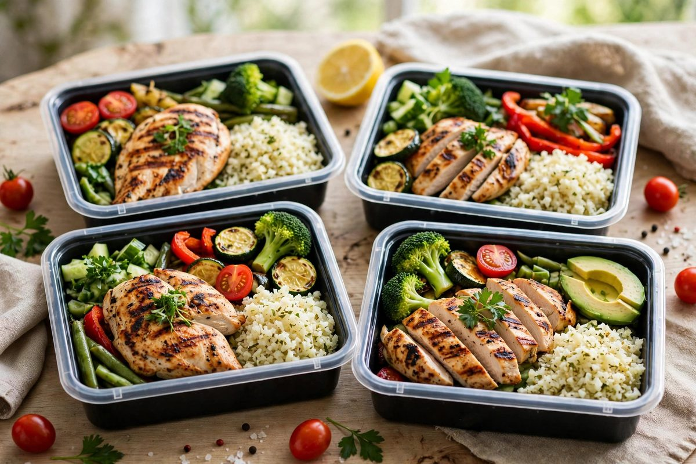

Home › Guides
Low-Carb Meal Prep: Cook Once, Eat Well All Week

Meal prep is the secret weapon of a successful low-carb diet. When healthy food is ready in the fridge, you eat it. When it is not, you eat whatever is easiest, which is usually a sandwich or a takeaway. Spending two hours on a Sunday cooking for the week saves time, money, and willpower, and it makes low-carb eating almost automatic.
The Sunday session
Pick two hours on a Sunday and cook in bulk. Roast a tray of chicken thighs, cook a large pot of soup, boil a dozen eggs, and chop vegetables for salads. These four tasks give you the base for most of the week's meals.
While things cook, prepare snacks: portion nuts into small bags, cut cheese into servings, and wash and chop vegetables for dipping. Store everything in clear containers so you can see what is available.
What to prep
Protein is the most useful thing to prep, because it is the part of the meal that takes longest. Cook chicken, beef, or pork in bulk, and use it in salads, wraps, and stir-fries through the week. Hard-boiled eggs keep for a week in the fridge and are a ready snack or breakfast.
Vegetables are also worth prepping: roast a tray of broccoli, cauliflower, and courgettes, and store them in containers. Cook cauliflower rice in bulk and freeze it in portions. Make a large pot of soup and freeze it in single servings.
Storage and food safety
Use glass or BPA-free plastic containers with tight lids. Label each container with the contents and the date, and use cooked food within three to four days. Freeze anything you will not eat in that time, and defrost it in the fridge overnight.
Keep raw meat separate from cooked food, and wash your hands and surfaces after handling raw meat. Reheat food until it is steaming hot, and do not reheat it more than once.
A simple weekly plan
Plan your week before you shop. Choose three dinners, two lunches, and a few snacks, and write a shopping list. Buy only what is on the list, so you do not waste food or money.
Keep the plan simple and repeat it. You do not need a different meal every day. A week of chicken, fish, eggs, and vegetables, cooked in different ways, is a good week. Change the plan every few weeks to keep it interesting, but do not make it complicated.
Freezer-friendly low-carb meals
Some low-carb meals freeze better than others. Soups and stews freeze well, because they reheat evenly and do not lose texture. Cooked meats, such as roast chicken and slow-cooked pork, also freeze well in portions. Cauliflower rice freezes well, but it should be slightly undercooked before freezing, so it does not go mushy when reheated.
Label every container with the contents and the date, and use frozen meals within three months. Defrost them in the fridge overnight, and reheat until steaming hot. A freezer full of ready meals is the best insurance against a busy week.
Frequently Asked Questions
How long does meal-prepped food keep?
Cooked food keeps 3 to 4 days in the fridge. Freeze anything you will not eat in that time, and defrost in the fridge overnight.
What is best to meal prep for low-carb?
Cooked protein such as chicken or beef, hard-boiled eggs, roasted vegetables, cauliflower rice, and a large pot of soup.
Do I need special containers?
Glass or BPA-free plastic containers with tight lids work well. Label them with contents and date.